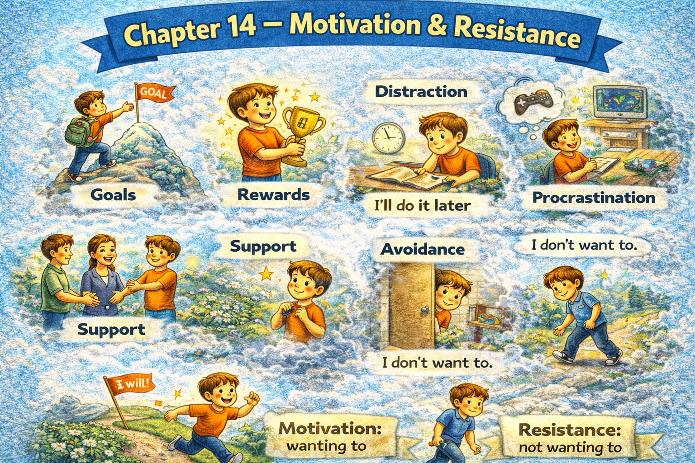

Chapter 14 — Motivation & Resistance

Micro Scene 1 — Internal Motivation
1️⃣ Scene Text
Motivation begins with perceived meaning.
When a task aligns with my values, effort feels natural.
I am more willing to act when the outcome feels significant.
Clear direction reduces internal friction.
If the purpose is vague, motivation weakens.
Intrinsic motivation arises from autonomy and competence.
External pressure may initiate action, but it rarely sustains it.
The stronger the internal alignment, the greater the persistence.
Motivation increases when progress becomes visible.
Small wins reinforce commitment.
Meaning converts intention into movement.
2️⃣ Core Verb Pool
begin
align
feel
act
reduce
weaken
arise
initiate
sustain
increase
reinforce
convert
3️⃣ Structure Patterns
When X + verb, Y + verb
If X + verb, Y + verb
X arises from + noun
X may + verb, but + clause
The + comparative…, the + comparative…
X converts A into B
4️⃣ Replace & Extend
Replace alignment:
The task aligns with my values.
→ The goal aligns with my identity.
→ The strategy aligns with long-term vision.
Replace sustainability:
External pressure may start action, but it does not sustain it.
→ Fear may trigger effort, but it does not maintain it.
Replace reinforcement:
Small wins reinforce persistence.
→ Feedback reinforces improvement.
→ Progress reinforces belief.
5️⃣ Spoken Mode
I’m motivated when I know why something matters.
If the purpose isn’t clear, I lose energy.
Pressure can push me to start, but it won’t keep me going.
Small progress keeps me moving.
Meaning drives action.
🔎 Structural Notes
• “align with” expresses internal coherence.
• “intrinsic vs external” distinguishes motivational source.
• Comparative structure shows intensity scaling.
Micro Scene 2 — Resistance and Avoidance
1️⃣ Scene Text
Resistance often appears before meaningful effort begins.
I hesitate when a task feels overwhelming or undefined.
If the outcome is uncertain, avoidance becomes tempting.
Procrastination creates temporary relief but long-term pressure.
Resistance is rarely about laziness; it is about friction.
When expectations feel unrealistic, motivation declines.
Internal conflict slows initiation.
If fear of failure dominates, action becomes delayed.
Avoidance reduces immediate discomfort but increases future stress.
Recognizing resistance reveals underlying obstacles.
Understanding friction allows adjustment.
2️⃣ Core Verb Pool
appear
hesitate
feel
become
create
decline
slow
dominate
delay
reduce
increase
recognize
reveal
allow
3️⃣ Structure Patterns
X appears before + clause
If X + verb, Y + verb
X creates A but + clause
X is not A; it is B
When X + verb, Y + verb
Understanding X allows + noun
4️⃣ Replace & Extend
Replace friction:
Resistance is about friction.
→ Avoidance reflects uncertainty.
→ Delay signals misalignment.
Replace the relief:
Procrastination creates relief but increases pressure.
→ Avoidance reduces stress but delays progress.
Replace recognition:
Recognizing resistance reveals fear.
→ Identifying friction clarifies obstacles.
→ Naming discomfort reduces confusion.
5️⃣ Spoken Mode
I resist when something feels unclear or overwhelming.
If I’m unsure about the outcome, I tend to delay.
Procrastination feels good now but worse later.
Resistance isn’t laziness — it’s friction.
When I see the friction, I can fix it.
🔎 Structural Notes
• “X is not A; it is B” reframes misconception.
• “temporary vs long-term” contrasts time horizon.
• Resistance is structural, not moral.
Micro Scene 3 — Overcoming Inertia
1️⃣ Scene Text
Inertia keeps behavior stable, even when change is necessary.
I remain inactive not because I lack ability, but because activation requires energy.
If the initial step feels too large, I reduce its scale.
Small action breaks psychological resistance.
Momentum develops after movement begins.
Once progress becomes visible, effort feels lighter.
Starting is often harder than continuing.
If I lower the threshold, initiation becomes easier.
Consistency transforms effort into habit.
Habit reduces decision fatigue.
Overcoming inertia requires deliberate initiation.
2️⃣ Core Verb Pool
keep
remain
require
reduce
break
develop
begin
lower
become
transform
reduce
overcome
3️⃣ Structure Patterns
X keeps + noun + adjective
I do not + verb because…, but because…
If X + verb, Y + verb
Once X + verb, Y + verb
X is harder than Y
X transforms A into B
Overcoming X requires + noun
4️⃣ Replace & Extend
Replace threshold:
If the step feels too large…
→ If the task feels overwhelming…
→ If the expectation feels unrealistic…
Replace momentum:
Momentum develops after action.
→ Confidence develops after progress.
→ Clarity develops after experimentation.
Replace transformation:
Consistency transforms effort into habit.
→ Repetition transforms action into skill.
→ Practice transforms difficulty into familiarity.
5️⃣ Spoken Mode
Starting is the hardest part.
If the first step feels too big, I make it smaller.
Once I begin, it gets easier.
Momentum builds after action.
Consistency turns effort into habit.
🔎 Structural Notes
• “not because…, but because…” corrects false attribution.
• “Once…” marks tipping point.
• Inertia is treated as neutral physics, not moral failure.
Micro Scene 4 — External Pressure vs Internal Drive
1️⃣ Scene Text
External pressure can trigger immediate action.
Deadlines create urgency that overrides hesitation.
However, pressure does not always produce sustainable motivation.
If action is driven solely by fear, exhaustion follows quickly.
Internal drive, by contrast, originates from commitment.
When effort aligns with personal values, persistence increases.
External accountability reinforces discipline, but it cannot replace purpose.
If the external force disappears, motivation may collapse.
Internal commitment remains stable even without supervision.
Short-term pressure produces compliance; long-term drive produces consistency.
Understanding the difference prevents dependency on pressure.
2️⃣ Core Verb Pool
trigger
create
override
produce
follow
originate
align
increase
reinforce
replace
disappear
collapse
remain
prevent
3️⃣ Structure Patterns
X can + verb
If X + verb, Y + verb
However,…
X does not + verb; it + verb
When X + verb, Y + verb
If X + verb, Y may + verb
X produces A; Y produces B
4️⃣ Replace & Extend
Replace the fear:
If action is driven by fear…
→ If effort is driven by guilt…
→ If work is driven by comparison…
Replace collapse:
If pressure disappears, motivation collapses.
→ If supervision stops, discipline weakens.
Replace consistency:
Long-term drive produces consistency.
→ Internal clarity produces persistence.
→ Purpose produces endurance.
5️⃣ Spoken Mode
Deadlines can push me to act.
But pressure alone doesn’t last.
If I’m only working out of fear, I burn out fast.
When I care about the goal, I keep going.
Pressure starts action — purpose sustains it.
🔎 Structural Notes
• “by contrast” marks structural difference.
• “solely by…” isolates causal driver.
• External vs internal is framed as stability difference.
Micro Scene 4 — External Pressure vs Internal Drive
1️⃣ Scene Text
External pressure can trigger immediate action.
Deadlines create urgency that overrides hesitation.
However, pressure does not always produce sustainable motivation.
If action is driven solely by fear, exhaustion follows quickly.
Internal drive, by contrast, originates from commitment.
When effort aligns with personal values, persistence increases.
External accountability reinforces discipline, but it cannot replace purpose.
If the external force disappears, motivation may collapse.
Internal commitment remains stable even without supervision.
Short-term pressure produces compliance; long-term drive produces consistency.
Understanding the difference prevents dependency on pressure.
2️⃣ Core Verb Pool
trigger
create
override
produce
follow
originate
align
increase
reinforce
replace
disappear
collapse
remain
prevent
3️⃣ Structure Patterns
X can + verb
If X + verb, Y + verb
However,…
X does not + verb; it + verb
When X + verb, Y + verb
If X + verb, Y may + verb
X produces A; Y produces B
4️⃣ Replace & Extend
Replace the fear:
If action is driven by fear…
→ If effort is driven by guilt…
→ If work is driven by comparison…
Replace collapse:
If pressure disappears, motivation collapses.
→ If supervision stops, discipline weakens.
Replace consistency:
Long-term drive produces consistency.
→ Internal clarity produces persistence.
→ Purpose produces endurance.
5️⃣ Spoken Mode
Deadlines can push me to act.
But pressure alone doesn’t last.
If I’m only working out of fear, I burn out fast.
When I care about the goal, I keep going.
Pressure starts action — purpose sustains it.
🔎 Structural Notes
• “by contrast” marks structural difference.
• “solely by…” isolates causal driver.
• External vs internal is framed as stability difference.
Micro Scene 5 — Burnout and Recovery
1️⃣ Scene Text
Burnout occurs when sustained effort exceeds sustainable capacity.
I feel depleted when recovery is insufficient.
If rest is postponed repeatedly, exhaustion accumulates.
Productivity declines even if working hours increase.
Burnout does not result from intensity alone; it results from imbalance.
When effort is not matched with renewal, motivation deteriorates.
Recovery requires deliberate disengagement.
If I ignore early signs, performance weakens gradually.
Rest restores cognitive clarity.
Distance renews perspective.
Recovery transforms fatigue into resilience.
2️⃣ Core Verb Pool
occur
exceed
feel
postpone
accumulate
decline
result
match
deteriorate
require
ignore
restore
renew
transform
3️⃣ Structure Patterns
X occurs when + clause
If X + verb, Y + verb
X does not result from A; it results from B
When X + verb, Y + verb
If X + verb, Y + verb
X transforms A into B
4️⃣ Replace & Extend
Replace imbalance:
Burnout results from imbalance.
→ Stress results from overload.
→ Fatigue results from neglect.
Replace restoration:
Rest restores clarity.
→ Breaks restore energy.
→ Reflection restores direction.
Replace resilience:
Recovery builds resilience.
→ Renewal builds sustainability.
→ Rest builds endurance.
5️⃣ Spoken Mode
Burnout happens when I push too hard for too long.
If I don’t rest, exhaustion builds up.
Working more hours doesn’t fix imbalance.
Rest gives me clarity again.
Recovery turns fatigue into strength.
🔎 Structural Notes
• “does not result from…, it results from…” corrects simplification.
• “sustained vs sustainable” expresses capacity distinction.
• Recovery is framed structurally, not emotionally.
Micro Scene 6 — Discipline and Self-Regulation
1️⃣ Scene Text
Discipline is the ability to act despite fluctuating emotion.
I do not rely solely on motivation to maintain progress.
When enthusiasm declines, structure sustains action.
If habits are well designed, resistance decreases.
Self-regulation requires awareness of internal state.
I monitor my energy and adjust accordingly.
Discipline does not eliminate emotion; it organizes response.
When impulse conflicts with intention, regulation intervenes.
Consistency results from repeated alignment between plan and action.
The stronger the structure, the less I depend on mood.
Self-regulation transforms reaction into intentional behavior.
2️⃣ Core Verb Pool
act
rely
maintain
decline
sustain
design
decrease
require
monitor
adjust
eliminate
organize
conflict
intervene
result
transform
3️⃣ Structure Patterns
X is the ability to + verb
I do not + verb solely on + noun
When X + verb, Y + verb
If X + verb, Y + verb
X does not + verb; it + verb
When X conflicts with Y, Z + verb
The + comparative…, the + comparative…
X transforms A into B
4️⃣ Replace & Extend
Replace reliance:
I do not rely on mood.
→ I do not rely on inspiration.
→ I do not rely on pressure.
Replace structure:
Structure sustains action.
→ Routine stabilizes effort.
→ Systems maintain progress.
Replace transformation:
Discipline transforms reaction into intention.
→ Awareness transforms impulse into choice.
→ Planning transforms uncertainty into direction.
5️⃣ Spoken Mode
Discipline means acting even when I don’t feel like it.
I can’t depend on motivation alone.
If my habits are solid, resistance drops.
Structure helps when mood doesn’t.
Discipline turns impulse into choice.
🔎 Structural Notes
• “despite fluctuating emotion” expresses emotional variability.
• “When X conflicts with Y…” frames internal tension.
• Discipline is defined structurally, not morally.
🔸 Integration Scene — Motivation & Resistance Structure
Motivation arises from meaning.
Resistance signals friction.
Inertia resists initiation.
External pressure triggers action.
Internal drive sustains it.
Burnout results from imbalance.
Recovery restores energy.
Discipline stabilizes behavior.
Structure reduces dependence on mood.
Small action breaks resistance.
Alignment strengthens persistence.
Avoidance increases future pressure.
Recognition enables adjustment.
Consistency builds identity.
Energy must be renewed.
Sustainable effort requires balance.
Integration Verb Focus
align
trigger
resist
sustain
restore
transform
monitor
stabilize